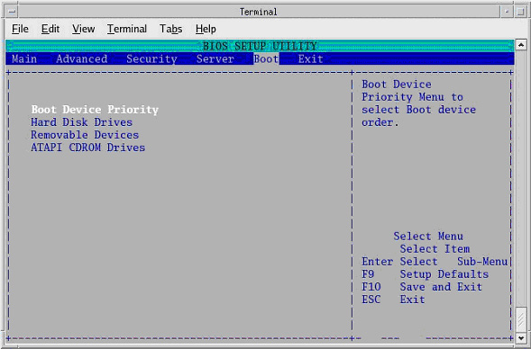
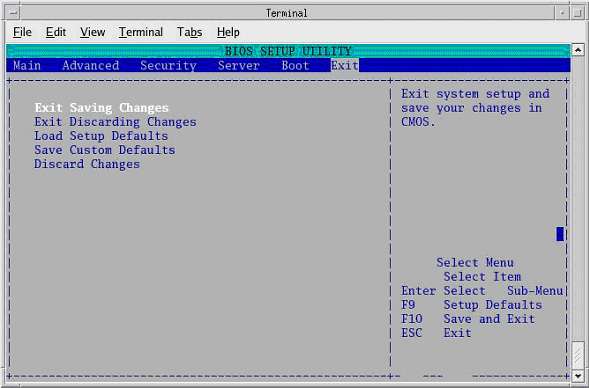

Operating Documentation
Direction 5193891-800, Rev# 5
LightSpeed 5.X Pro16 Limited Access Service Information (Adv)
Operating Documentation |
| Last Revised: | 26 September 2007 |
This module describes the steps necessary to change the DARC Node BIOS to enable the OS/Apps softward load onto DARC Node from the Host Computer. The DARC Node Boot Order BIOS is modified before the DARC Node OS/Apps softward load. The Westville DARC BIOS must be returned to its original settings after the DARC Node OS/Apps softward load for proper normal operation. The Jarrell DARC BIOS does NOT need to be returned to its original settings.
| NOTE: |
(For Westville DARC and DARC2 Nodes)
The
DARC BIOS must be returned to its operational (“restore”)
settings to avoid a known Intel PXE boot problem, which will prevent
future communication to the DARC Node. (For all Jarrell DARC2 and VDARC Nodes) The DARC BIOS has only one setting. Jarrell DARC BIOS illustrations are not shown, but the process is similar to the Westville process. (See Change DARC BIOS Boot Order - Restore Settings.) (For the Westville VDARC Nodes) The DARC BIOS has only one setting. Westville VDARC BIOS illustrations are not shown, but the process is similar to the Westville process. (See Change DARC BIOS Boot Order - Restore Settings.) |
| NOTE: | Be patient. Telnet response may be slow. |
Open a Unix Shell and type the following:
{ctuser@hostname} su -
Password: <Password>
[root@hostname] service cliservice start
[root@hostname] telnet localhost 623
At Server Prompt type: darc
username <Enter>
password <Enter>
Login successful
dpccli> reset
ok
dpccli> console
GEHC/CTT Linux 6.2.9
Kernel 2.6.15-2.5 smp...
See you on the darc side of the moon
darc login:
| NOTE: | A slight delay here is normal. Be patient. |
| NOTE: | If the "reset” and “console" commands fail
and the "Active SOL failed" message is displayed, connect to the DARC
via SOL, and then type the command "console". With the SOL session
connected to the DARC Console, press the "reset" switch (not the power
switch) on the front of the DARC and proceed with the instructions
below. If the telnet fails to provide a successful login (to the dpccli prompt) load the SOL CD into the DARC , press the "reset" switch (or the power switch) on the front of the DARC. SOL CD should auto-eject when completed. |
Interrupt the DARC boot process to enter the BIOS Setup mode. When the message Press <F2> to enter setup appears, press F2.
| NOTE: | <F2> may have to be pressed many times before BIOS setting screen can be seen. There will be a short delay before the DARC BIOS setup screen is displayed. |
Illustration 1: BIOS Setup Utility Screen

Highlight Boot Menu using the arrow keys.
Highlight Boot Device Priority Menu, then press <Enter>.
Illustration 2: BIOS Setup Utility - Boot Device Priority

Highlight 1st Boot Device, then press <Enter>.
A small window will appear with the options available.
(For Westville DARC and DARC2 Nodes) Using the down-arrow key, scroll down to highlight IBA 1.1.08 Slot 0338 (Host to DARC Ethernet port), then press <Enter>.
Illustration 3: Boot Device Options - Westville shown

Using the down-arrow key, scroll down to highlight 2nd Boot Device, then press <Enter>.
A small window will appear with the options available.
(For Westville DARC and DARC2 Nodes) Using the down-arrow key, scroll down to highlight ATAPI CD-ROM, then press <Enter>.
Illustration 4: Boot Device Options - Westville shown

Using the down-arrow key, scroll down to highlight 3rd Boot Device, then press <Enter>.
A small window will appear with the options available.
(For Westville DARC and DARC2 Nodes) Using the down-arrow key, scroll down to highlight Hard Drive, then press <Enter>.
Verify that the “Load / Enable” Boot Device Priority is set to:
(For Westville DARC and DARC2 Nodes)
IBA 1.1.08 Slot 0338
ATAPI CD-ROM
Hard Drive
IBA 1.1.08 Slot 0339
Removable Devices
| NOTE: | The removable devices might not be present. This is OK. |
Press <Esc> to exit back to Boot menu.
Save the DARC BIOS settings:
From Boot menu, arrow to (move to) the Exit menu.
Highlight Exit Saving Changes and press <Enter>
Illustration 5: BIOS Setup Utility - Exit Saving Changes

Highlight [OK] and press <Enter> to “Save configuration changes and exit now.”
Wait one minute.
Illustration 6: BIOS Setup Utility - Save Changes Pop-Up

| NOTE: | After saving the DARC BIOS, the BIOS SETUP UTILITY window should disappear (within one minute) and the DARC will begin to reboot. If the BIOS SETUP UTILITY window does not disappear within a minute, close the shell and continue with the load process on the DARC. Reset the DARC if it is hung. If the DARC OS/Apps software load continues to fail and a pop-up screen states that the user should check DARC Boot BIOS Order, perform the steps within this procedure again. Also, verify that the issue is not dirty or damaged media. |
When the darc login: prompt appears, close the Terminal Window.